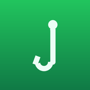

Install
✕
✕

NZ Fly Finder
Install on your iPhone
Tap
Tap
Share
Tap
View More
Tap
Add to Home Screen
▾
Don't show this again
🪰
NZ Fly Finder
Conditions • Recommendations • Library
⬇ Install app
Fly Library
Fly Library
Back
Region
Region
Northland
Auckland/Waikato
Eastern (Rotorua/BoP)
Taupō
Hawke's Bay
Taranaki
Wellington
Nelson/Marlborough
West Coast
North Canterbury
Central South Island
Otago
Southland
Conditions
Water type
Clarity
Flow
Fish rising?
Advanced
Water temp
Sky
Wind
River trend
Hatch
Structure
Fish behaviour
Recommend flies
Recommended flies
Set your conditions and tap
Recommend flies
.